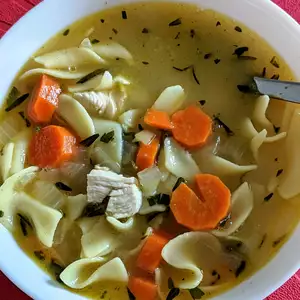

Chicken Noodle Soup
Easily made, this is a wonderfully flavorful chicken noodle soup that will cure any common disease and make your guests happy.

Ingredients
- 3 tablespoons of vegetable oil
- 2 onions, diced
- 6 stalks of celery, diced
- 6 carrots, diced
- 3/4 tablespoon chopped fresh rosemary
- 3/4 tablespoon chopped fresh tarragon
- 3/4 tablespoon chopped fresh thyme
- 3/4 tablespoon chopped Italin flat leaf parsley
- 3 quarts of low-fat, low sodium chicken broth
- 3 1/2 cups of cubed skinless, boneless chicken breat meat
- 16 ounces of egg noodles
- salt and pepper to taste
Steps
-
In a large skillet over medium heat, cook onions in oil
until translucent. Stir in celery, carrot, rosemary, tarragon,
thyme, and parsley and cook, covered, until vegetables and soft,
5 to 10 minutes.
-
Transfer vegetable mixture to a large pot and pour in chicken broth.
Simmer over low hear, covered, for 30 minutes.
-
Stir in chicken breast pieces and egg noodles and simmer, covered,
30 minutes more. Season with salt and pepper.